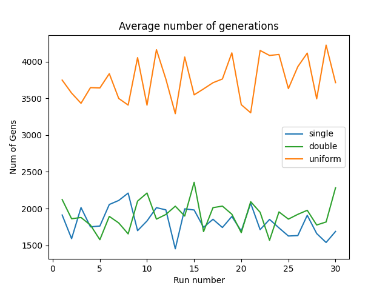
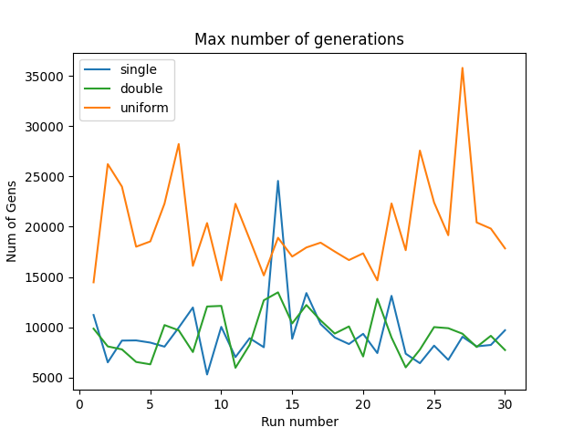
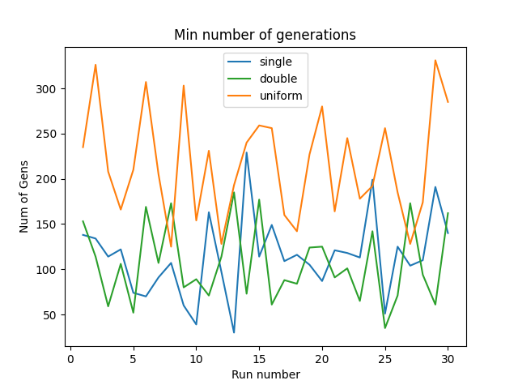

Projects
INTRODUCTION:
The goal of this project was to replicate a genetic algorithm designed to find optimal strings of characters. The basis for this effort was a paper by Mitchell et. al., 'The Royal Road for Genetic Algorithms: Fitness Landscapes and GA Performance'. In computer science, a genetic algorithm is a method of optimization that uses techniques found in nature to solve problems through basic forms of learning. In the paper, the authors outline a way of generating, processing, and scoring schemas, which are sixty-four bit strings of either a "1", or another character (represented by a "*"). To evaluate the different schemas, the authors created a scoring system based on the runs of 1s in each string, as shown in the table below. In this project, we examined the use of the Royal Road technique to iterate pairs of random schema in an efficient manner until we generate the ideal schema, s15.
s1 = 11111111********************************************************; c1 = 8
s2 = ********11111111************************************************; c2 = 8
s3 = ****************11111111****************************************; c3 = 8
s4 = ************************11111111********************************; c4 = 8
s5 = ********************************11111111************************; c5 = 8
s6 = ****************************************11111111****************; c6 = 8
s7 = ************************************************11111111********; c7 = 8
s8 = ********************************************************11111111; c8 = 8
s9 = 1111111111111111************************************************; c9 = 16
s10 =****************1111111111111111********************************; c10 = 16
s11 =********************************1111111111111111****************; c11 = 16
s12 =************************************************1111111111111111; c12 = 16
s13 =11111111111111111111111111111111********************************; c13 = 32
s14 =********************************11111111111111111111111111111111; c14 = 32
s15 =1111111111111111111111111111111111111111111111111111111111111111; c15 = 64
Where "s" is the schema being matched and "c" is the score given. For example the following schema would score 40 points due to it matching s1, s3, s4, and s10:
11111111********1111111111111111********************************
APPROACH:
To solve this problem, I created an algorithm that started with a set of 128 schemas, each 64 bits long, then processed them to create new generations through parent crossovers and random mutations, with the end result being the ideal schema, s15, or one that contains sixty-four 1s. Each of the 128 schemas was randomly generated with each bit in the schemas having a 50% chance of either being a 1 or a *. The algorithm then followed the following pseudocode for creating each next generation until a generation contained the ideal schema.
pick parents p1 and p2 from previous generation
with probability crossover_probability:
generate c1 and c2 as p1xp2 and p2xp1
else
c1 = p1.copy()
c2 = p2.copy()
c1 = c1.mutate()
c2 = c2.mutate()
I was most interested in how quickly the different types of parent crossovers - single point, double point, and uniform - reached the goal state, s15. A very good explanation of the different crossovers is presented in this article. Suffice to say, single- and double-point crossovers use one or two large chunks of each parent, respectively, to create the child, whereas uniform crossover uses individual bits from each parent in random fashion.
To test all of these crossovers, I set up a simulation that consisted of thirty runs, with each run consisting of 100 trial runs of the genetic algorithm, each using one of the three crossover types, for a total of 300 trials per run. Each trial ended once a generation contained the target schema, and the number of generations it took to reach it was recorded. In each run, the average number of generations it took was recorded for each crossover type, as well as the maximum and minimum number of generations it took each of the crossovers to finish in the run. This is the data that is graphed below.

Figure 1

Figure 2

Figure 3
CONCLUSIONS:
Based on the data collected, it is clear the uniform crossover requires the most number of generations to achieve the target schema, whereas single and double crossovers achieve the target in nearly half the generations, on average. All three crossovers, though, generate similar values for maximum and minimum generations required to reach the target schema.
These results make sense in this context as the scoring algorithm should favor single- and double-point crossover. Scoring is heavily dependent on long sections of the string to be the same, and these types of crossover randomly swap sections of the parents to create the children, while uniform randomly swaps each individual bit from the parents to create the children, usually ruining the long sections of '1s' needed to increase the score.